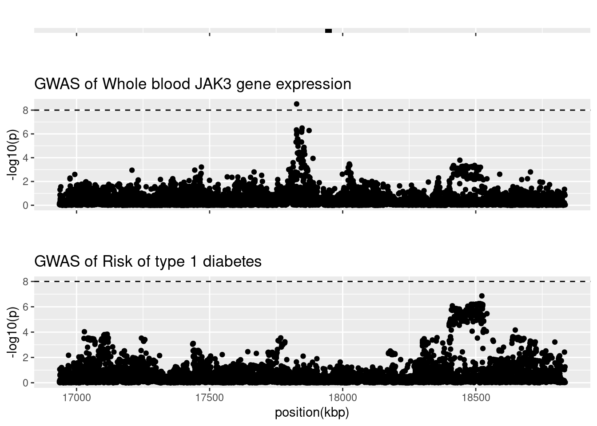

Last updated: 2023-05-04
Checks: 7 0
Knit directory: T1DSCREEN/
This reproducible R Markdown analysis was created with workflowr (version 1.7.0). The Checks tab describes the reproducibility checks that were applied when the results were created. The Past versions tab lists the development history.
Great! Since the R Markdown file has been committed to the Git repository, you know the exact version of the code that produced these results.
Great job! The global environment was empty. Objects defined in the global environment can affect the analysis in your R Markdown file in unknown ways. For reproduciblity it’s best to always run the code in an empty environment.
The command set.seed(20220313) was run prior to running
the code in the R Markdown file. Setting a seed ensures that any results
that rely on randomness, e.g. subsampling or permutations, are
reproducible.
Great job! Recording the operating system, R version, and package versions is critical for reproducibility.
Nice! There were no cached chunks for this analysis, so you can be confident that you successfully produced the results during this run.
Great job! Using relative paths to the files within your workflowr project makes it easier to run your code on other machines.
Great! You are using Git for version control. Tracking code development and connecting the code version to the results is critical for reproducibility.
The results in this page were generated with repository version db4ef30. See the Past versions tab to see a history of the changes made to the R Markdown and HTML files.
Note that you need to be careful to ensure that all relevant files for
the analysis have been committed to Git prior to generating the results
(you can use wflow_publish or
wflow_git_commit). workflowr only checks the R Markdown
file, but you know if there are other scripts or data files that it
depends on. Below is the status of the Git repository when the results
were generated:
Ignored files:
Ignored: .Rhistory
Ignored: .Rproj.user/
Ignored: data/README_cis_eqtl.txt
Ignored: data/README_cis_eqtl_AF.txt
Ignored: data/cis-EQTL-AF.txt
Ignored: data/cis_sumstats/2018-07-18_SNP_AF_for_AlleleB_combined_allele_counts_and_MAF_pos_added.txt
Ignored: refs/
Untracked files:
Untracked: data/cis_eqtl_sumstats/
Untracked: data/cis_sumstats/JAK1_T1D.rds
Untracked: data/cis_sumstats/JAK3_T1D.rds
Untracked: data/export/IFNAR2_eqtl_TwoSampleMR.csv
Untracked: data/export/IL2RA_eqtl_TwoSampleMR.csv
Untracked: data/export/IL2RB_eqtl_TwoSampleMR.csv
Untracked: data/export/IL2RG_eqtl_TwoSampleMR.csv
Untracked: data/export/IL6R_eqtl_TwoSampleMR.csv
Untracked: data/export/JAK1_T1D_TwoSampleMR.csv
Untracked: data/export/JAK1_eqtl_TwoSampleMR.csv
Untracked: data/export/JAK2_eqtl_TwoSampleMR.csv
Untracked: data/export/JAK3_T1D_TwoSampleMR.csv
Untracked: data/export/JAK3_eqtl_TwoSampleMR.csv
Untracked: data/export/TYK2_eqtl_TwoSampleMR.csv
Unstaged changes:
Modified: analyses/IL2RB.Rmd
Note that any generated files, e.g. HTML, png, CSS, etc., are not included in this status report because it is ok for generated content to have uncommitted changes.
These are the previous versions of the repository in which changes were
made to the R Markdown (analyses/JAK3.Rmd) and HTML
(docs/JAK3.html) files. If you’ve configured a remote Git
repository (see ?wflow_git_remote), click on the hyperlinks
in the table below to view the files as they were in that past version.
| File | Version | Author | Date | Message |
|---|---|---|---|---|
| html | c541480 | jkoskenniemi | 2023-05-04 | Build site. |
| html | 3e38cf2 | jkoskenniemi | 2023-05-03 | Build site. |
| Rmd | 4e1528f | jkoskenniemi | 2023-05-03 | First commit |
Load packages and import data
library(tidyverse)-- Attaching core tidyverse packages ------------------------ tidyverse 2.0.0 --
v dplyr 1.1.2 v readr 2.1.4
v forcats 1.0.0 v stringr 1.5.0
v ggplot2 3.4.2 v tibble 3.2.1
v lubridate 1.9.2 v tidyr 1.3.0
v purrr 1.0.1
-- Conflicts ------------------------------------------ tidyverse_conflicts() --
x dplyr::filter() masks stats::filter()
x dplyr::lag() masks stats::lag()
i Use the conflicted package (<http://conflicted.r-lib.org/>) to force all conflicts to become errorslibrary(data.table)
Attaching package: 'data.table'
The following objects are masked from 'package:lubridate':
hour, isoweek, mday, minute, month, quarter, second, wday, week,
yday, year
The following objects are masked from 'package:dplyr':
between, first, last
The following object is masked from 'package:purrr':
transposelibrary(coloc)This is a new update to coloc.library(TwoSampleMR)TwoSampleMR version 0.5.6
[>] New: Option to use non-European LD reference panels for clumping etc
[>] Some studies temporarily quarantined to verify effect allele
[>] See news(package='TwoSampleMR') and https://gwas.mrcieu.ac.uk for further detailslibrary(ggpubr)
library(ieugwasr)API: public: http://gwas-api.mrcieu.ac.uk/
Attaching package: 'ieugwasr'
The following object is masked from 'package:TwoSampleMR':
ld_matrixlibrary(rio)
library(here)here() starts at C:/Users/jajoko/Documents/T1DSCREENhere::i_am("analyses/JAK3.Rmd")here() starts at C:/Users/jajoko/Documents/T1DSCREENJAK3_eqtl <- read_exposure_data("data/export/JAK3_eqtl_TwoSampleMR.csv", sep=",")Warning in format_data(as.data.frame(exposure_dat), type = "exposure", snps =
NULL, : se column is not numeric. Coercing...Warning in format_data(as.data.frame(exposure_dat), type = "exposure", snps = NULL, : The following SNP(s) are missing required information for the MR tests and will be excluded
rs3212797
rs8100347
rs3212802
rs3212701
rs7255852
rs2238644
rs10419991
rs2238645
rs3212798
rs3212780
rs1122385
rs3212710
rs11888
rs2302603
rs3212774
rs2302600
rs2302601
rs2071183
rs55855622
rs55988375
rs73020686
rs73020688
rs6512226
rs3212764
rs60485073
rs76086839
rs2072496
rs111922843
rs2382989
rs45602038
rs3212770
rs74701207
rs7252885
rs722428
rs3212713
rs3212711
rs61210412
rs845350
rs56201072
rs380194
rs845349
rs77852139
rs8102195
rs111682204
rs75581575
rs2303694
rs2303693
rs8107222
rs79341622
rs77488050
rs75445489
rs3746176
rs36075281
rs75681761
rs79888481
rs74389203
rs8109373
rs79557920
rs78036311
rs76184771
rs34053595
rs187957
rs7246328
rs12984174
rs7251067
rs79257623
rs453709
rs6512230
rs1000262
rs77571703
rs3212714
rs75245298
rs74497531
rs10409003
rs73020697
rs79355165
rs28375303
rs78855479
rs34746918
rs8103520
rs2385088
rs34010330
rs189943266
rs12463294
rs10408290
rs55982463
rs7508025
rs12610040
rs8103622
rs77543386
rs8101992
rs8101151
rs191567989
rs28572537
rs116922746
rs185550576
rs2007981
rs78061871
rs113465793
rs8107367
rs1043327
rs12984397
rs62137136
rs10442
rs12459283
rs34171762
rs10164319
rs10413237
rs2303697
rs10405479
rs186462858
rs8111708
rs8109688
rs3212781
rs2161488
rs9676539
rs1560119
rs2303695
rs2303696
rs1560118
rs10164323
rs10405636
rs403439
rs10427083
rs2382987
rs3810429
rs73020413
rs11086080
rs7252707
rs4808801
rs748609
rs12461552
rs7257932
rs8106096
rs4595905
rs192061585
rs74593676
rs7258465
rs75461514
rs151335087
rs186232242
rs8105994
rs4487035
rs7507658
rs11673604
rs8103660
rs116428486
rs374614
rs3212712
rs3212730
rs408484
rs73020406
rs9676596
rs9676553
rs73020694
rs1806980
rs4808804
rs8107743
rs12151305
rs271629
rs6512227
rs55909261
rs7254249
rs58903867
rs57706619
rs271622
rs10409483
rs271628
rs151254757
rs10409505
rs12461653
rs12974304
rs56204254
rs425663
rs7256534
rs8107347
rs8107351
rs271621
rs271624
rs34256197
rs7252848
rs271626
rs142192096
rs149801062
rs10425982
rs388159
rs66485773
rs55854503
rs76194
rs10403249
rs112272436
rs7253990
rs8109573
rs271623
rs73018486
rs4808136
rs34509804
rs2278238
rs35648412
rs875396
rs8100767
rs138211707
rs1006854
rs424608
rs10411009
rs28531775
rs56094553
rs57950724
rs8105263
rs7248402
rs2561043
rs76195
rs7249020
rs28499529
rs113525103
rs10854166
rs4808133
rs8112876
rs79843187
rs4808134
rs10419404
rs7409343
rs60511269
rs56075989
rs34436202
rs73014967
rs61111394
rs7251653
rs28400331
rs3212794
rs28717004
rs11669420
rs56384297
rs62137133
rs73020403
rs7245564
rs113693450
rs6512272
rs74180847
rs8104056
rs12979924
rs2014686
rs8108324
rs12982753
rs2045386
rs113892579
rs1078127
rs2115072
rs76225638
rs12971969
rs117819869
rs418889
rs11086109
rs61536155
rs56239553
rs74986984
rs429390
rs11670628
rs55805736
rs76616163
rs73020684
rs3746198
rs140082226
rs55780484
rs10417391
rs61753902
rs897751
rs73016432
rs11883085
rs17884999
rs34910819
rs35682036
rs10401903
rs12984771
rs12986058
rs62121695
rs145248558
rs7257982
rs12983532
rs41526947
rs35874560
rs186343135
rs10405632
rs58612111
rs919265
rs147486515
rs117949447
rs35343344
rs12982156
rs12984770
rs73923206
rs10412208
rs58522288
rs141560203
rs7256497
rs117542837
rs117553425
rs77864112
rs7255433
rs12986231
rs117435848
rs76239044
rs142198281
rs2240811
rs117960047
rs112629066
rs142032038
rs117561273
rs117284734
rs1560117
rs62121696
rs58192594
rs117815964
rs410043
rs17878488
rs149119945
rs11667720
rs3746200
rs423756
rs400564
rs117328795
rs426035
rs142848711
rs116991122
rs2385089
rs191883927
rs7258225
rs78955162
rs150399948
rs845367
rs451399
rs12972373
rs10408286
rs117226863
rs12980620
rs73922174
rs117350294
rs56282814
rs4808073
rs10418546
rs185011869
rs12972764
rs442345
rs79957526
rs2287861
rs17710624
rs34068189
rs150688309
rs142843133
rs12459319
rs147386994
rs191186164
rs149996714
rs35028576
rs141056239
rs10402989
rs62119935
rs183411739
rs28508103
rs191130120
rs2162889
rs10402066
rs11666409
rs145653034
rs116010937
rs78830644
rs17879281
rs414542
rs62125238
rs34465381
rs17523547
rs28562497
rs62126004
rs117331870
rs10420707
rs35627700
rs187962388
rs2124896
rs182159492
rs419109
rs138441074
rs10407385
rs12985340
rs419503
rs17880695
rs919266
rs17879492
rs1864005
rs117648604
rs78749967
rs143409169
rs111829830
rs12151017
rs3746199
rs74699092
rs10407076
rs117674426
rs192819950
rs145743435
rs10422501
rs141782883
rs11673445
rs10419386
rs1548079
rs10854154
rs845366
rs442346
rs11672529
rs73520742
rs149224340
rs4808643
rs117229635
rs11672734
rs4808595
rs12327637
rs8111791
rs12973412
rs139085369
rs4808089
rs432392
rs722430
rs146677550
rs10425420
rs74402454
rs78864427
rs35458678
rs59956366
rs148411600
rs28510435
rs147552693
rs115447907
rs113943426
rs271620
rs57900449
rs183976076
rs78944640
rs4808675
rs75421007
rs71332114
rs186287175
rs6512172
rs112047702
rs8113044
rs2288408
rs112902985
rs117871617
rs116256150
rs62121729
rs7249431
rs74319012
rs77591688
rs144058439
rs1973094
rs6512185
rs2314670
rs2305751
rs6512205
rs76142682
rs8112691
rs56902856
rs28505199
rs10418979
rs8110983
rs1560091
rs12983381
rs3859570
rs138367060
rs12975172
rs146484343
rs418625
rs62122391
rs3810209
rs58695150
rs11883329
rs192613876
rs407306
rs12978739
rs12975314
rs146164605
rs2288428
rs28522873
rs78902574
rs7251188
rs28532404
rs8110364
rs1079180
rs10423712
rs17882294
rs3212733
rs189593084
rs2305754
rs12460100
rs117341846
rs10405780
rs12982987
rs57478158
rs192100577
rs428626
rs117269320
rs2644777
rs12461009
rs117607802
rs79401390
rs2305766
rs74342487
rs7249490
rs34893599
rs35998851
rs151259580
rs147140555
rs11671286
rs56022120
rs66508783
rs62119766
rs434815
rs12975964
rs150138576
rs115782967
rs379837
rs118126615
rs17523540
rs399012
rs10403986
rs115755445
rs117781820
rs71336794
rs55962550
rs112284608
rs73924314
rs118129530
rs35005380
rs447364
rs79884649
rs55910163
rs7247320
rs8111437
rs4808636
rs369815
rs35458733
rs73526099
rs55740319
rs117492001
rs16981571
rs12982665
rs55916174
rs55738594
rs143628531
rs3212783
rs10415911
rs7250346
rs10413723
rs28663533
rs55817899
rs185266492
rs116951567
rs190477477
rs145441330
rs79573897
rs112685984
rs9676600
rs117860403
rs413706
rs141011993
rs8103661
rs140783938
rs2382983
rs117462032
rs4808842
rs12609290
rs186176914
rs62137140
rs143689299
rs71338611
rs117320302
rs62126021
rs16981906
rs34563036
rs3826693
rs56386464
rs8112017
rs3826700
rs34611565
rs8107783
rs7246869
rs6512160
rs77184138
rs12984294
rs80080221
rs8101791
rs10421381
rs873513
rs184426420
rs12973050
rs73009918
rs186250836
rs367139
rs111857630
rs113698848
rs75787047
rs62121135
rs73018336
rs4808078
rs4808629
rs16981580
rs12983584
rs3826695
rs4808678
rs4808600
rs16981567
rs113185969
rs146660043
rs706761
rs408568
rs40623
rs141356897
rs7359928
rs143649480
rs10420951
rs35557167
rs186219766
rs10410442
rs71338609
rs28434655
rs140897567
rs1985157
rs8107501
rs4808571
rs115002674
rs8111424
rs12984449
rs2288544
rs6512162
rs8105810
rs140408295
rs8107504
rs6512210
rs61512473
rs145386584
rs10421106
rs41292091
rs181028626
rs142407112
rs3795026
rs12162223
rs77927797
rs72999390
rs10405650
rs116767743
rs415509
rs7255811
rs7251585
rs10421060
rs11086069
rs6512209
rs55810749
rs4808555
rs76477358
rs41293581
rs62126055
rs35036312
rs28681264
rs12610845
rs28597966
rs149211665
rs34512069
rs4808677
rs449747
rs146172654
rs117846241
rs10406168
rs7254179
rs113095611
rs115837568
rs1859948
rs11666414
rs7247659
rs6512166
rs9576
rs116857064
rs117956919
rs62126161
rs12981683
rs6512208
rs80154549
rs73016309
rs35750250
rs34031974
rs12981981
rs4808568
rs845368
rs435614
rs145725950
rs11669718
rs7251862
rs4808585
rs11086086
rs4808551
rs7507441
rs62128061
rs10406737
rs114737623
rs7253481
rs8109466
rs114134340
rs117440287
rs75887471
rs2303682
rs172032
rs7246553
rs10417445
rs4808741
rs112771647
rs1808532
rs3826696
rs143925553
rs4808742
rs71338608
rs144004328
rs4808649
rs138602176
rs4627494
rs2288463
rs147675061
rs34143665
rs8113743
rs185328885
rs10424168
rs999813
rs12459207
rs117951771
rs79723696
rs58193770
rs2303683
rs8111636
rs4808687
rs58547189
rs113230003
rs62123686
rs8105701
rs2279004
rs78941635
rs11882867
rs62123685
rs80028482
rs6512174
rs11666413
rs28775334
rs12978850
rs4808146
rs113186589
rs10422405
rs28816128
rs7245899
rs10412875
rs11709Warning in format_data(as.data.frame(exposure_dat), type = "exposure", snps =
NULL, : None of the provided SNPs can be used for MR analysis, they are missing
required information.JAK3_T1D <- read_outcome_data("data/export/JAK3_T1D_TwoSampleMR.csv", sep=",")
JAK3 <- harmonise_data(JAK3_eqtl, JAK3_T1D)Harmonising Whole blood JAK3 mRNA (4vucPG) and Risk of type 1 diabetes (xN25Oe)
Removing the following SNPs for incompatible alleles:
rs12462174
Removing the following SNPs for being palindromic with intermediate allele frequencies:
rs10415560, rs10415568, rs10420922, rs10439159, rs1055150, rs1076356, rs11086101, rs11665905, rs11667720, rs11668114, rs11668500, rs11880242, rs11881338, rs12104396, rs12162223, rs12610811, rs12975883, rs12976972, rs12978286, rs12979944, rs12981981, rs12983897, rs12984771, rs13343952, rs1862645, rs200373, rs2267922, rs2305757, rs2353101, rs28792153, rs35234601, rs3736328, rs399036, rs404733, rs4255897, rs4447554, rs4609972, rs4808150, rs4808153, rs4808157, rs4808662, rs4808670, rs4808679, rs4808683, rs4808732, rs4808798, rs56971820, rs57966750, rs59332356, rs62119890, rs62125231, rs66495698, rs66606313, rs7248037, rs7249862, rs7254734, rs73018481, rs75452709, rs7648, rs8102837, rs8103906, rs8103913, rs8104533, rs8106359, rs8106468, rs8108174, rs8110972, rs8111932, rs8112913#create Manhattan plots with vertical lines indicating the selected area (see below 2.4)
JAK3_eqtl.fig <-
JAK3 %>%
ggplot(aes(x = pos.exposure/1000, y=-log10(pval.exposure))) +
geom_point()+
geom_hline(yintercept=8, linetype="dashed")+
ggtitle("GWAS of JAK3 gene expression in blood") +
ylab("-log10(p)") +
xlab(NULL)
JAK3_T1D.fig <-
JAK3 %>%
ggplot()+
geom_point(mapping=aes(x = pos.exposure/1000, y=-log10(pval.outcome))) +
geom_hline(yintercept=8, linetype="dashed")+
# geom_vline(xintercept=36.9e6/1000, linetype="dashed")+
# geom_vline(xintercept=37.3e6/1000, linetype="dashed")+
ggtitle("GWAS of risk of T1D") +
ylab("-log10(p)") +
xlab("position(kbp)")
#Obtain range for figure of gene
layer_scales(JAK3_T1D.fig)$x$range$range[1] 17046.52 18946.91JAK3_gene.fig <-
ggplot(data = JAK3) +
geom_blank() +
geom_segment(x=37521.878, xend=37571.094, y=1, yend=1, linewidth = 2) +
annotate("text", label = "JAK3",
x= (37521.878 + 37571.094) / 2, y=1, hjust = 0.5, vjust = -1) +
xlim(36521.878, 38571.094) +
ylim(0.75, 2) +
ylab(NULL) + xlab(NULL) +
theme(axis.text.y = element_blank(), axis.ticks.y = element_blank(),
panel.grid.major.y = element_blank(),
panel.grid.minor.y = element_blank())
fig_JAK3_manhattan <- ggarrange(JAK3_gene.fig, JAK3_eqtl.fig, JAK3_T1D.fig,
heights = c(1, 3, 3), nrow = 3,
ncol = 1, align = "hv")
# ggsave("figures/JAK3-manhattan-combined-fig.pdf",
# height = 6, width = 8, units = "in")#recode MAF
JAK3 <- JAK3 %>%
mutate(maf.exposure = ifelse(eaf.exposure < 0.5, eaf.exposure, 1-eaf.exposure)) %>%
mutate(maf.outcome = ifelse(eaf.outcome < 0.5, eaf.outcome, 1-eaf.outcome))
colnames(JAK3) [1] "SNP" "effect_allele.exposure" "other_allele.exposure"
[4] "effect_allele.outcome" "other_allele.outcome" "beta.exposure"
[7] "beta.outcome" "eaf.exposure" "eaf.outcome"
[10] "remove" "palindromic" "ambiguous"
[13] "id.outcome" "pos.outcome" "pval.outcome"
[16] "se.outcome" "ncase.outcome" "ncontrol.outcome"
[19] "samplesize.outcome" "outcome" "mr_keep.outcome"
[22] "pval_origin.outcome" "data_source.outcome" "pval.exposure"
[25] "pos.exposure" "samplesize.exposure" "se.exposure"
[28] "exposure" "mr_keep.exposure" "pval_origin.exposure"
[31] "id.exposure" "data_source.exposure" "action"
[34] "mr_keep" "maf.exposure" "maf.outcome" D1 <- list(
type = "quant", # quantitative trait
pvalues = JAK3$pval.exposure,
N = JAK3$samplesize.exposure,
MAF = JAK3$maf.exposure,
pos = JAK3$pos.exposure,
snp = JAK3$SNP,
sdY = 1)
D2 <- list(
type = "cc", # case-control trait
Beta = JAK3$beta.outcome,
varBeta = JAK3$se.outcome,
pvalues = JAK3$pval.outcome,
N = 18942+501638, # Case-control study (Chiou et al. 2021 Nature)
s = 18942/(18942+501638), # N_case/(N_case+ N_ctrl)
MAF = JAK3$maf.exposure, #eqtl used here in purpose
pos = JAK3$pos.outcome,
snp = JAK3$SNP)
check_dataset(D1)NULLcheck_dataset(D2)NULLcoloc_JAK3 <- coloc.abf(D1, D2, p1 = 1e-4, p2 = 1e-4, p12 = 1e-5)PP.H0.abf PP.H1.abf PP.H2.abf PP.H3.abf PP.H4.abf
3.15e-05 1.23e-02 2.53e-03 9.85e-01 3.44e-04
[1] "PP abf for shared variant: 0.0344%"sensitivity(coloc_JAK3, "H4 > 0.7")Results fail decision rule H4 > 0.7
sessionInfo()R version 4.3.0 (2023-04-21 ucrt)
Platform: x86_64-w64-mingw32/x64 (64-bit)
Running under: Windows 10 x64 (build 14393)
Matrix products: default
locale:
[1] LC_COLLATE=Finnish_Finland.1252 LC_CTYPE=Finnish_Finland.1252
[3] LC_MONETARY=Finnish_Finland.1252 LC_NUMERIC=C
[5] LC_TIME=Finnish_Finland.1252
time zone: America/New_York
tzcode source: internal
attached base packages:
[1] stats graphics grDevices utils datasets methods base
other attached packages:
[1] here_1.0.1 rio_0.5.29 ieugwasr_0.1.5 ggpubr_0.6.0
[5] TwoSampleMR_0.5.6 coloc_5.1.0.1 data.table_1.14.8 lubridate_1.9.2
[9] forcats_1.0.0 stringr_1.5.0 dplyr_1.1.2 purrr_1.0.1
[13] readr_2.1.4 tidyr_1.3.0 tibble_3.2.1 ggplot2_3.4.2
[17] tidyverse_2.0.0 workflowr_1.7.0
loaded via a namespace (and not attached):
[1] tidyselect_1.2.0 viridisLite_0.4.2 farver_2.1.1 viridis_0.6.3
[5] fastmap_1.1.1 reshape_0.8.9 promises_1.2.0.1 digest_0.6.31
[9] timechange_0.2.0 lifecycle_1.0.3 processx_3.8.1 magrittr_2.0.3
[13] compiler_4.3.0 rlang_1.1.1 sass_0.4.6 tools_4.3.0
[17] utf8_1.2.3 yaml_2.3.7 knitr_1.42 ggsignif_0.6.4
[21] labeling_0.4.2 curl_5.0.0 plyr_1.8.8 abind_1.4-5
[25] withr_2.5.0 foreign_0.8-84 grid_4.3.0 fansi_1.0.4
[29] susieR_0.12.35 git2r_0.32.0 colorspace_2.1-0 scales_1.2.1
[33] cli_3.6.1 rmarkdown_2.21 crayon_1.5.2 generics_0.1.3
[37] rstudioapi_0.14 httr_1.4.5 tzdb_0.3.0 readxl_1.4.2
[41] cachem_1.0.8 cellranger_1.1.0 matrixStats_0.63.0 vctrs_0.6.2
[45] Matrix_1.5-4 jsonlite_1.8.4 carData_3.0-5 car_3.1-2
[49] callr_3.7.3 hms_1.1.3 mixsqp_0.3-48 rstatix_0.7.2
[53] irlba_2.3.5.1 jquerylib_0.1.4 glue_1.6.2 ps_1.7.5
[57] cowplot_1.1.1 stringi_1.7.12 gtable_0.3.3 later_1.3.1
[61] munsell_0.5.0 pillar_1.9.0 htmltools_0.5.5 R6_2.5.1
[65] rprojroot_2.0.3 evaluate_0.20 lattice_0.21-8 highr_0.10
[69] haven_2.5.2 backports_1.4.1 openxlsx_4.2.5.2 broom_1.0.4
[73] httpuv_1.6.9 bslib_0.4.2 zip_2.3.0 Rcpp_1.0.10
[77] gridExtra_2.3 whisker_0.4.1 xfun_0.39 fs_1.6.2
[81] getPass_0.2-2 pkgconfig_2.0.3